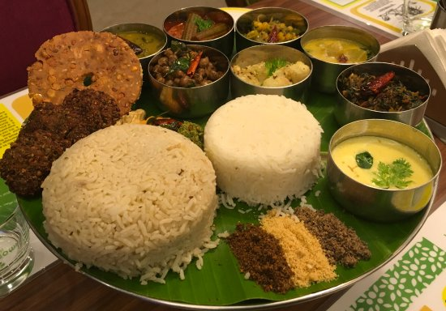
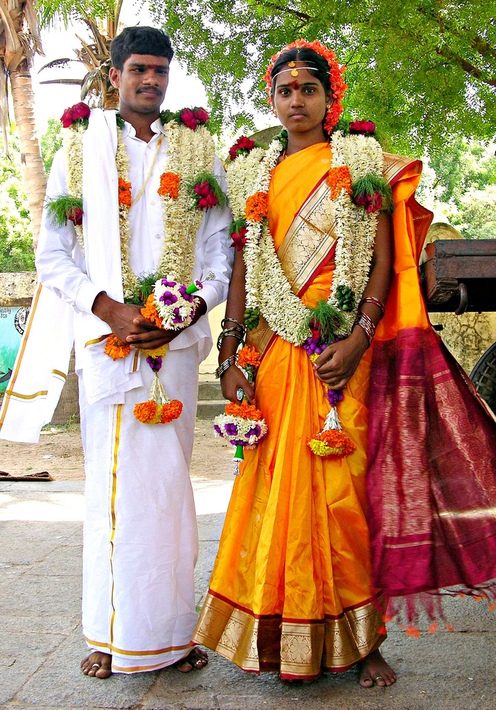
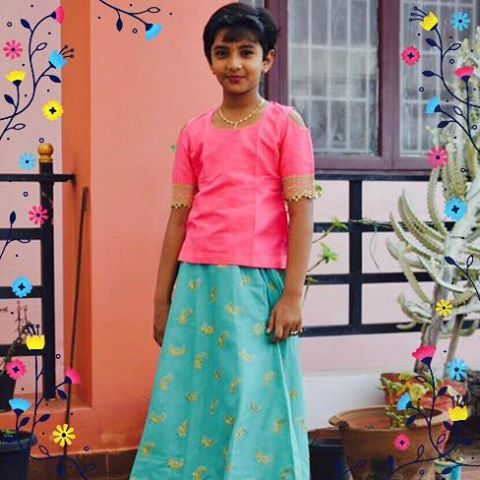
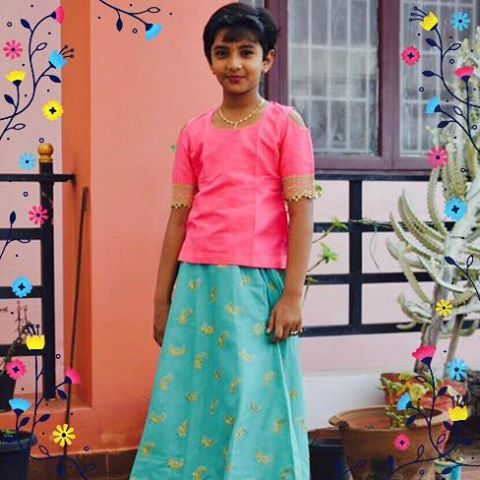
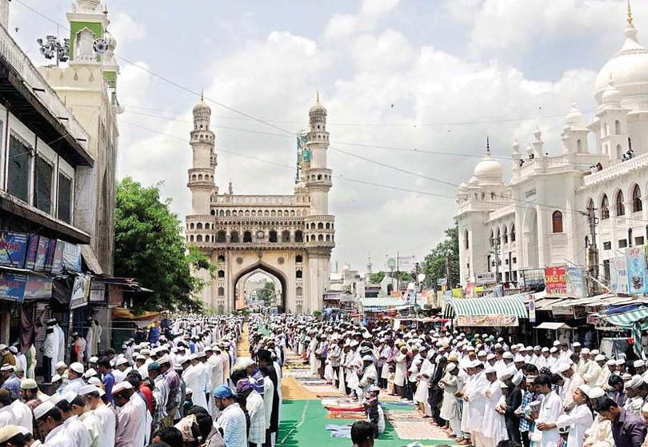
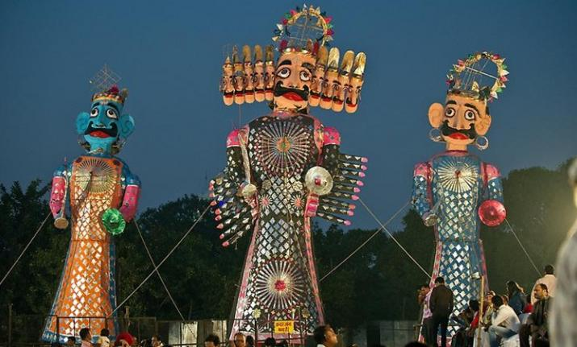
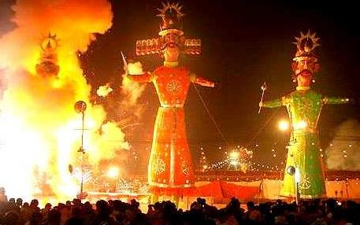
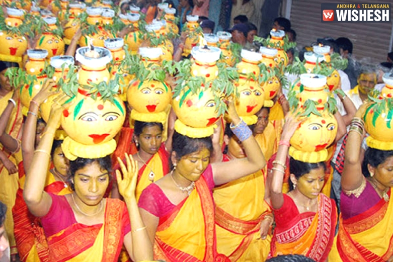
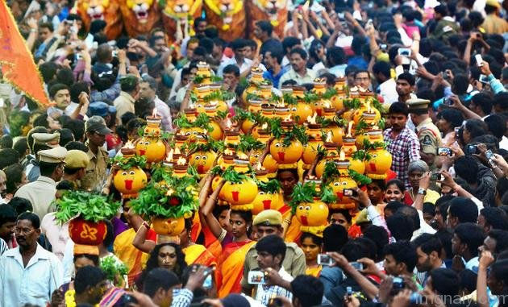

Telangana
- Home
- Food

- Fashion

 

- Festival
- Bonalu
- Dussehra
- Ramzan


Ramzan
The biggest congregation is witnessed at historic Mecca Masjid near Charminar. Ramzan is the ninth month as per the Islamic Lunar calendar. Ramadan/Ramzan begins after the month of Shaban, when the new moon is sighted. In case new moon is not seen after 30 days of Shaban, then Ramadan begins. The month of Ramzan lasts for 29 or 30 days based on the sighting of the moon. If the moon is sighted during the night of 29th fast, then the month of Shawwal begins next day and Ramadan is over. The first of Shawwal is the Eid called Eid-ul-fitr for distinguishing this from Eid-ul-azha (Bakri Eid).
 Dussehra
Vijayadashami also known as Dussehra or Navaratri is an important Hindu festival celebrated in Telangana. Vijayadashami, a festival that symbolizes the victory of good over evil, is celebrated with traditional fervor, devotion and gaiety across Telangana. The name Vijayadashami is derived from the Sanskrit terms “Vijaya-dashami” which means victory on the day of Dashami. Dashami is tenth lunar day of a Hindu calendar month. - Ramzan
 Bonalu
Bonalu is a Hindu Festival where Goddess Mahakali is worshiped. It is an annual festival celebrated in the twin Cities Hyderabad and Secunderabad and other parts of Telangana state, India. Bonalu is celebrated usually during Ashada Masam that falls in July/August. Special poojas are performed for goddess Yellamma during the first and last day of the festival. - Dussehra
- Bonalu